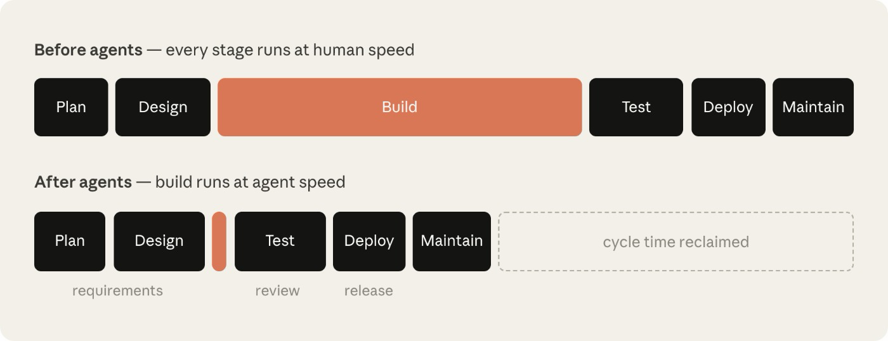
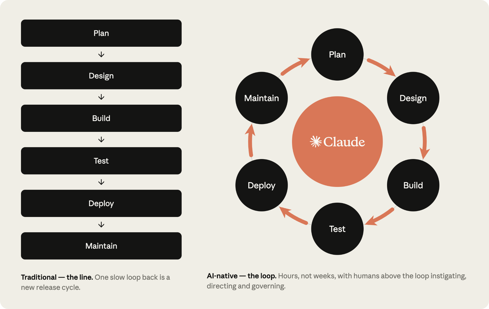
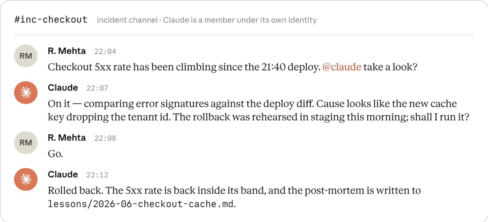
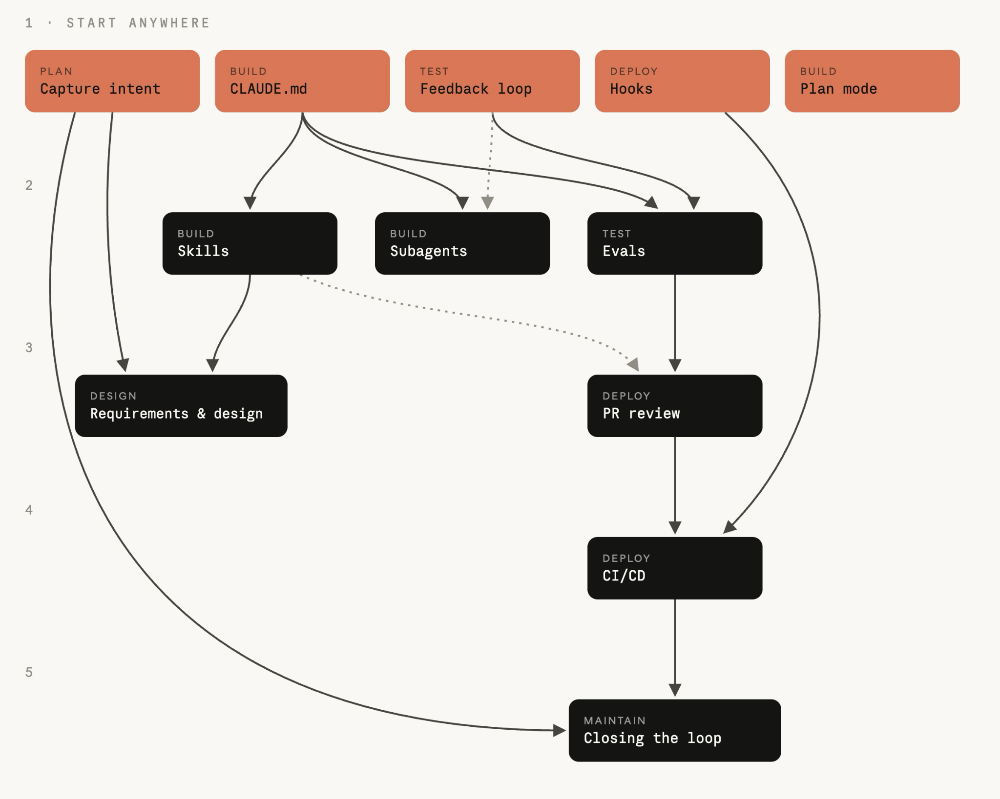

<title>AI-Native SDLC 深度解析与落地指南</title>
<style>
  :root {
    --fg: #1a1a18;
    --muted: #5f5e5a;
    --accent: #c1502e;
    --surface: #f5f4ef;
    --border: #d8d6cd;
    --code-bg: #efeee8;
    --green: #3a7d44;
    --amber: #9a6a00;
  }
  @media (prefers-color-scheme: dark) {
    :root:not([data-theme="light"]) {
      --fg: #e8e6df; --muted: #a3a198; --accent: #e0784f;
      --surface: #1c1b18; --border: #3a382f; --code-bg: #26251f;
      --green: #6fbf7a; --amber: #d9a940;
    }
  }
  :root[data-theme="dark"] {
    --fg: #e8e6df; --muted: #a3a198; --accent: #e0784f;
    --surface: #1c1b18; --border: #3a382f; --code-bg: #26251f;
    --green: #6fbf7a; --amber: #d9a940;
  }
  body {
    background: var(--surface); color: var(--fg);
    font-family: -apple-system, "PingFang SC", "Hiragino Sans GB", "Microsoft YaHei", sans-serif;
    line-height: 1.75; padding-inline: max(16px, env(safe-area-inset-left));
  }
  main { max-width: 920px; margin: 0 auto; padding-block: 48px 96px; }
  h1 { font-size: 1.9rem; line-height: 1.3; margin-bottom: 0.25em; }
  h2 { font-size: 1.45rem; margin-top: 2.4em; padding-top: 0.6em; border-top: 1px solid var(--border); }
  h3 { font-size: 1.15rem; margin-top: 1.8em; }
  h4 { font-size: 1rem; margin-top: 1.4em; color: var(--accent); }
  .lede { color: var(--muted); font-size: 0.95rem; margin-bottom: 2em; }
  .table-wrap { overflow-x: auto; }
  table { border-collapse: collapse; width: 100%; margin: 1em 0; font-size: 0.9rem; }
  th, td { border: 1px solid var(--border); padding: 8px 12px; text-align: left; vertical-align: top; }
  th { background: var(--code-bg); white-space: nowrap; }
  code { background: var(--code-bg); padding: 1px 5px; border-radius: 4px; font-size: 0.87em; }
  pre { background: var(--code-bg); border: 1px solid var(--border); border-radius: 8px; padding: 14px 16px; overflow-x: auto; font-size: 0.83rem; line-height: 1.55; }
  pre code { background: none; padding: 0; }
  .callout { border-left: 3px solid var(--accent); background: var(--code-bg); padding: 10px 16px; border-radius: 0 8px 8px 0; margin: 1em 0; }
  .callout.warn { border-left-color: var(--amber); }
  .callout.ok { border-left-color: var(--green); }
  figure { margin: 1.5em 0; }
  img { max-width: 100%; height: auto; }
  figure img { border-radius: 10px; border: 1px solid var(--border); }
  figcaption { color: var(--muted); font-size: 0.85rem; margin-top: 0.5em; }
  .play { border: 1px solid var(--border); border-radius: 10px; padding: 4px 20px 14px; margin: 1.2em 0; background: var(--code-bg); }
  .play h4 { margin-top: 0.8em; }
  .tag { display: inline-block; font-size: 0.75rem; padding: 1px 8px; border-radius: 99px; border: 1px solid var(--border); color: var(--muted); margin-right: 4px; }
  .tag.start { border-color: var(--accent); color: var(--accent); }
  .metric-lead { color: var(--green); }
  .metric-lag { color: var(--amber); }
  a { color: var(--accent); }
  ol, ul { padding-left: 1.4em; }
  li { margin: 0.25em 0; }
</style>

<main>
  <h1>AI-Native SDLC 深度解析与落地指南</h1>
  <p class="lede">对 Anthropic《The AI-Native SDLC Playbook》（2026-08-21，含四张配图）的深度解读，视角：<strong>可实践、可落地</strong>。回答三个问题：为什么传统 SDLC 失效、新范式的骨架是什么、组织如何按依赖顺序逐个 play 落地。</p>

  <h2>1. 问题诊断：瓶颈转移，而非消失</h2>

  <figure>
    
    <figcaption>图 1：Before agents —— 每个阶段都以人速运行，Build 最长；After agents —— Build 塌缩为一条细线，回收了大量 cycle time，但 Plan/Design/Test/Deploy/Maintain 仍以人速运行，requirements / review / release 成为新的瓶颈。</figcaption>
  </figure>

  <p>文档的核心诊断是：当 AI 让编码提速一个数量级后，<strong>为"编码最贵"时代设计的流程全部失配</strong>，具体表现为三个结构性问题：</p>
  <ol>
    <li><strong>瓶颈移到 Build 两侧</strong>：Plan、Review/Test、Deploy 仍以人速运转。PRD、估算仪式、评审会的存在前提是"开发要拖几周甚至几季度，必须强制对齐"——这个前提没了。</li>
    <li><strong>控制与现实脱节</strong>：逐行人工评审在人写代码的时代合理，当 agent 产出大部分 diff 时根本跟不上。以安全团队为例：其编制按人类产出配置，agent 把产出翻倍后，要么评审队列堆积，要么代码带病上线——受监管组织两个都不能接受。</li>
    <li><strong>治理成本上升</strong>：例外仍要过周会/月会级别的委员会，产出越快，排队越长。</li>
  </ol>

  <div class="callout"><strong>落地启示</strong>：转型不是"给现有流程加 AI 助手"，而是对每个阶段问同一个问题——<em>这个控制点在"代码不再稀缺"的世界里，还能达成它原来的控制目标吗？</em>控制目标保留（accountability、审计、安全），执行方式重写。</div>

  <h2>2. 总体范式：从线到环的三条主线</h2>

  <figure>
    
    <figcaption>图 2：左为传统"线"——回流一次就是一个新发布周期；右为 AI 原生"环"——Claude 位于中心，六阶段成环，周期从周压缩到小时，<strong>人在环上（above the loop）发起、指挥、治理</strong>，而不在环内执行。</figcaption>
  </figure>

  <p>通读全文，playbook 的全部 12 个 play 由三条主线串起来。理解这三条主线比记住任何单个 play 都重要：</p>

  <h3>主线一：工件链即审计轨迹（Artifact Chain = Audit Trail）</h3>
  <pre><code>intent.md → spec.md → plan.md → diff + tests → PR + review findings → incident record
   (Plan)     (Design)   (Build)      (Build/Test)      (Deploy)           (Maintain)
     ↑                                                                        │
     └────────────  生产环境 control-band 违规 → 诊断写回新的 intent.md  ────────┘</code></pre>
  <p>每个阶段<strong>以提交一个版本化工件结束，下一阶段以读取它开始</strong>。前半程（Plan/Design）的工件是 Markdown，因为产品负责人和 agent 要读写同一份文件；Build 起工件变为代码及其记录。commit 链本身就是审计轨迹：谁要的、agent 产出了什么、谁批准的，全部可查。</p>

  <h3>主线二：控制分层（Advisory → Deterministic → Human Gate）</h3>
  <div class="table-wrap"><table>
    <tr><th>层</th><th>机制</th><th>性质</th><th>适用场景</th></tr>
    <tr><td>建议性</td><td><strong>Skill</strong>（<code>.claude/skills/</code>）</td><td>让违规变<strong>罕见</strong>，但不强制</td><td>政策在写代码/写 spec 时被应用——品牌、安全、合规、UX 标准</td></tr>
    <tr><td>确定性</td><td><strong>Hook</strong>（<code>.claude/settings.json</code> / managed settings）</td><td>让违规<strong>接近不可能</strong>，每次动作都执行</td><td>必须无一例外成立的政策——冻结目录、密钥防泄漏、测试文件保护</td></tr>
    <tr><td>人类门</td><td><strong>Approval gate</strong>（hook 的 ask 模式 + 分支保护）</td><td>暂停动作直到具名的人批准</td><td>生产发布、变更管理签核——<strong>只在 Deploy，不在 Build</strong></td></tr>
  </table></div>
  <div class="callout warn"><strong>关键纪律</strong>：build 阶段不要放需要人批准的 hook——那会把人重新放回所有并行会话的关键路径上，抵消掉并行化的全部收益。人的注意力只应集中在 gate 上，审 agent 标记出的东西，而不是从头启动每个阶段。</div>

  <h3>主线三：人从环内移到环上（Human Above the Loop）</h3>
  <p>人对每个需要判断的决策仍然负责，但注意力随工件迁移：不再评审每行代码，而是评审 intent 是否被正确理解、spec 是否解决了问题、plan 的风险是否可接受、agent 标记的 finding 是否成立。终态是<strong>每个被接受的工件自动触发下一道门</strong>：被接受的 intent.md 触发设计 pass，被批准的 spec.md 触发 plan mode，合并的 PR 触发流水线，生产环境越界写回下一个 intent.md。</p>

  <h2>3. 六阶段 × 12 个 Play 落地详解</h2>

  <p>每个 play 按 playbook 的五段式展开：变什么 → 起步条件 → 执行步骤 → 治理 → 度量。下面提炼其可落地内核。</p>

  <h3>Stage 1 — Plan</h3>
  <div class="play">
    <h4>Play: Capture as intent.md <span class="tag start">起点 play</span></h4>
    <p><strong>核心</strong>：想法不再排队等产品经理代写。提出者用自己的语言与 Claude 头脑风暴，Claude 像分析师一样追问（范围、用户、约束、成功标准），产出 proto-spec 存为 <code>intent.md</code>，提交到产品仓库的 <code>intent/</code> 目录。</p>
    <p><strong>落地要点</strong>：</p>
    <ul>
      <li>intent 的三个入口等价处理：人的想法、ticket、生产告警（Stage 6 回写）。无论来源，产品负责人都要在提交前审校。</li>
      <li>非工程师无需碰 git：通过 GitHub connector 让 Claude 从 claude.ai/Cowork 代提交。</li>
      <li>intent 模板编码为 skill，由技术成员编写、负责人签核。</li>
      <li>intent 仓库选址：单产品放产品仓库 <code>intent/</code> 目录（工件链贴着代码）；跨多仓库才值得独立 intent 仓库。</li>
    </ul>
    <p><strong>示例 —— intent.md</strong>（原文示例的中译，理赔状态自助查询）：</p>
    <pre><code># Intent：理赔状态自助查询
作者：J. Ortiz（理赔运营）。状态：草稿。

## 问题
客户致电客服中心询问理赔进度。
坐席约三分之一的通话时间花在纯状态查询上。

## 期望结果
客户在门户中看到理赔状态、下一步骤和预计日期。

## 受影响的用户和系统
理赔坐席、门户团队、理赔核心 API。

## 约束
门户会话中不引入新的 PII。仅使用现有认证。

## 开放问题
第三方公估行是否也需要访问权限？</code></pre>
    <p><strong>度量</strong>：<span class="metric-lead">领先</span>——首次对话到 intent.md 提交的时间（期望：数周 → 数小时）；<span class="metric-lag">滞后</span>——intent 存活率（被接受到 Design 的比例）+ spec 提交后 intent 还被修改的次数。</p>
  </div>

  <h3>Stage 2 — Design</h3>
  <div class="play">
    <h4>Play: Requirements &amp; design（需求与设计合并为一次会话）</h4>
    <p><strong>核心</strong>：产品负责人带着 <code>intent.md</code> 开会话，组织政策（品牌/安全/合规/UX）以 skills 形式在场，Claude 产出 <code>spec.md</code> 并<strong>主动标记顾虑区域</strong>（尤其是政策互相冲突之处）。产品负责人评审但不撰写；标记的顾虑在工程介入前就与各政策负责人解决。</p>
    <p><strong>落地要点</strong>：</p>
    <ul>
      <li>先手工跑 prompt，固化后编码为组织级 slash command，最终把"intent.md 被接受"设为触发器，由非交互 job 自动跑设计 pass 并以 PR 提交 spec.md——此后产品负责人的首次介入就是评审。</li>
      <li>前端工作可叠加 Claude Design：从 intent.md 出 mock，迭代后导出给 Claude Code 构建。</li>
      <li><code>spec.md</code> 与 <code>intent.md</code> 成对提交：一个记录要什么，一个记录决定了什么。</li>
    </ul>
    <p><strong>示例 —— 设计 pass 的 prompt</strong>（原文示例的中译）：</p>
    <pre><code>阅读附上的 intent.md，产出一份将其集成进现有代码库的需求与设计规格。
应用你可用的 skills，使方案符合我们的品牌指南、安全政策和 UX 标准。
将规格完整记录为 spec.md，可以直接交付工程团队。
清楚地描述所有顾虑区域，尤其是当你无法同时满足互相冲突的政策时。</code></pre>
    <p><strong>度量</strong>：<span class="metric-lead">领先</span>——intent.md 与 spec.md 两次 commit 的时间差；<span class="metric-lag">滞后</span>——build 开始后的需求返工（plan.md 首次提交之后的 spec.md 提交数，git log 直接可查）。</p>
  </div>

  <h3>Stage 3 — Build（五个 play，是 play 密度最高的阶段）</h3>
  <div class="play">
    <h4>Play: Plan mode as default <span class="tag start">起点 play</span></h4>
    <p><strong>核心</strong>：没有经批准的计划就不写代码。工程师以 plan mode 开会话（Claude 只读代码库、不能改文件），给 Claude <code>intent.md</code> + <code>spec.md</code>，要求产出注明变更文件、工作顺序、验证测试的 plan，并<strong>拷问计划</strong>（会打破什么？哪步最险？放弃了哪些方案？），迭代到"没看过对话的人也能照计划实现"为止，然后提交 <code>plan.md</code>。</p>
    <p><strong>落地要点</strong>：实现偏离计划时，在同一 commit 更新 plan.md（可用 hook 强制同步）；guardrails 成熟后常规工作切 auto mode——紧的 spec、小的爆炸半径、有测试覆盖。评审对象从"逐行动作"转向"工件"。</p>
    <p><strong>示例 —— plan.md</strong>（原文示例的中译）：</p>
    <pre><code># 计划：理赔状态自助查询（源自 intent.md 2026-06-02）

## 变更文件
portal/src/claims/StatusPanel.tsx（新建）、claims-api/routes/status.py、
claims-api/tests/test_status.py

## 工作顺序
1. 在现有认证之后新增状态查询端点。
2. 面板对接该端点。
3. 接入门户导航。

## 风险
理赔核心 API 限流 50 rps；面板必须做缓存。

## 验证
test_status.py 覆盖四种理赔状态；截图与已批准的 mock 一致。</code></pre>
    <p><strong>度量</strong>：<span class="metric-lead">领先</span>——一次实现即合并的比例、plan 批准到 PR 合并的时间；<span class="metric-lag">滞后</span>——每个变更的返工轮数、合并 diff 与 plan.md 的一致率。</p>
  </div>
  <div class="play">
    <h4>Play: The CLAUDE.md <span class="tag start">起点 play</span></h4>
    <p><strong>核心</strong>：给 Claude 一份"新人第一天所需"的文件：命令、约定、架构、团队最常踩的坑。机构知识从人脑和 wiki 变成 agent 每次会话都读、全团队维护的版本化文件。</p>
    <p><strong>落地要点</strong>：<code>/init</code> 起步 → 砍到一页以内（全文每次会话都占上下文，过时内容纯浪费）→ 入 git 根目录、像代码一样评审 → <strong>工作规则：Claude 同一个错犯两次，纠正就进 CLAUDE.md</strong>。</p>
    <p><strong>示例 —— CLAUDE.md</strong>（原文支付服务示例的中译）：</p>
    <pre><code># 支付服务

## 命令
- 构建：make build
- 测试：make test（单元）、make itest（集成，需要 docker）
- Lint：make lint（CI 中运行；推送前修复）

## 约定
- Java 21，Spring Boot 3。不再新增 Lombok。
- 金额一律用 BigDecimal，禁止 double。
- 每个端点都需要 src/itest 下的集成测试。

## 架构
- api/ 放 REST 控制器，core/ 放领域逻辑，
  adapters/ 对接外部系统。
- Kafka 事件定义在 schemas/；永远不要编辑生成的类。

## Claude 常犯的错
- 不要升级依赖版本；平台团队统一管理。
- 遗留 v1/ 包已冻结；改动进 v2/。</code></pre>
    <p><strong>度量</strong>：<span class="metric-lead">领先</span>——CLAUDE.md 本应抓住的错误复发率；<span class="metric-lag">滞后</span>——新成员首个 PR 合并时间。</p>
  </div>
  <div class="play">
    <h4>Play: Skills as institutional knowledge <span class="tag">依赖 CLAUDE.md（可选）</span></h4>
    <p><strong>核心</strong>：把"执行不一致"的政策逐条编码为 skill（SKILL.md：frontmatter 写触发时机，正文写怎么做），放 <code>.claude/skills/</code> 随代码分发，或经 plugin marketplace 组织级分发。</p>
    <p><strong>落地要点</strong>：经验法则——<em>需要被一致应用的机构知识写成 skill；属于 CLAUDE.md 或 prompt 的东西不要写成 skill</em>。写完后要换着花样让 Claude 做相关任务、确认 skill 每次都被触发。政策变更 = 改 skill + 政策负责人签核，工程师下个会话自动获得新版。</p>
    <p><strong>示例 —— .claude/skills/secure-api-review/SKILL.md</strong>（原文示例的中译）：</p>
    <pre><code>---
name: secure-api-review
description: 应用 API 安全标准。创建或修改对外端点、
  评审 API 代码、生成 OpenAPI 规格时使用。
---
# 安全 API 评审

创建或变更 API 端点时：
1. 认证：每个端点都要求网关 JWT；
   /health 之外不允许匿名路由。
2. 输入校验：按 OpenAPI schema 校验请求体，拒绝未知字段。
3. 审计：每个改变状态的端点都要发出审计事件，包含
   操作者、动作、实体和时间戳。
4. 数据分级：schema 中标记为 pii 的字段绝不允许
   出现在日志或错误信息中。

运行 scripts/check-endpoints.sh，并把输出附在你的总结里。</code></pre>
    <p><strong>度量</strong>：<span class="metric-lead">领先</span>——政策批准到 skill 合并的时间；<span class="metric-lag">滞后</span>——PR 评审中引用该政策的 finding 数（应趋零；不趋零则 skill 没触发或文本已漂移）。</p>
  </div>
  <div class="play">
    <h4>Play: Hooks as build-time guardrails</h4>
    <p><strong>核心</strong>：skill 背后的确定性层。Build 期 hook 要<strong>快且只作用于变更的文件</strong>：阻止改冻结目录/生成代码、编辑后跑 formatter/linter、把凭证挡在 diff 外。重的检查（全量测试）留给 commit 和 PR。</p>
  </div>
  <div class="play">
    <h4>Play: Parallel sessions &amp; subagents</h4>
    <p><strong>核心</strong>：一个工程师同时驱动多条工作流。并行会话 = 独立 Claude Code 实例 + 独立 git worktree（互不感知，工程师是唯一共享点）；subagent = 会话内的有界助手（独立上下文窗口 + 工具限制），封装重复性工作（verifier、simplifier、researcher），定义在 <code>.claude/agents/</code> 并入 git。</p>
    <p><strong>落地要点</strong>：任务按"动不同文件"切分（动相同文件的任务串行放同一会话）；两三路并行起步，<strong>上限 = 一个人能认真评审的流数</strong>；控制来自仓库里的配置（hooks + permissions 对所有会话生效）。</p>
    <p><strong>示例 —— .claude/agents/verifier.md</strong>（原文示例的中译）：</p>
    <pre><code>---
name: verifier
description: 在会话报告完成前运行应用并检查变更是否生效
tools: Bash, Read
---
用 make run 启动应用。演练变更的行为以及相邻的两个流程。
报告你运行了什么、看到了什么、以及任何与 plan.md 不符的行为。
不要修任何东西；只报告。</code></pre>
    <p><strong>度量</strong>：<span class="metric-lead">领先</span>——评审质量不降级前提下的并发会话数、"操舵 vs 等待"的时间占比；<span class="metric-lag">滞后</span>——人均每周合并变更数 × 返工率。</p>
  </div>

  <h3>Stage 4 — Test</h3>
  <div class="play">
    <h4>Play: Feedback loop <span class="tag start">起点 play</span></h4>
    <p><strong>核心</strong>：永远给 Claude 一个自我验证的手段（测试/构建/截图 diff），让会话在人看到之前就自查自修。信号到得越晚，检查 agent 产出的人就越成为瓶颈。</p>
    <p><strong>落地要点</strong>：</p>
    <ul>
      <li>把验证收敛为单命令（<code>make test</code>，非零退出），并在 CLAUDE.md 里附上健康输出样例。</li>
      <li>目标要可量化、无需问人："test_status.py 全绿"、"截图与 mock 一致"、"端点返回 200 且带新字段"。</li>
      <li>修 bug 先写失败测试并提交，再让 Claude 在<strong>不许改测试</strong>的约束下修代码（测试文件保护 hook 强制执行）——先于修复存在且 agent 改不动的测试，是 bug 已修复的证据。</li>
      <li>UI 工作用浏览器/截图工具闭环：实现 → 截图 → 对比 → 调整，两三轮属正常。</li>
      <li>区分两个概念：feedback loop 贯穿任务全程反复运行；verifier subagent 是任务结束后的<strong>全新上下文</strong>终检，结论不被产生代码时的假设污染。</li>
    </ul>
    <p><strong>示例 —— CLAUDE.md 中的验证块</strong>（原文示例的中译）：</p>
    <pre><code>## 验证你的工作

- 构建：make build（必须以 "Build succeeded" 结束）
- 测试：make test（全绿；永远不要跳过或删除失败的测试）
- Lint：make lint（零警告）

报告任何任务完成之前运行以上全部三项，并粘贴输出。
如果测试失败，修代码，而不是修测试。</code></pre>
    <p><strong>度量</strong>：<span class="metric-lead">领先</span>——agent 产出的首次 CI 通过率；<span class="metric-lag">滞后</span>——单 PR 评审时长、变更失败率。</p>
  </div>
  <div class="play">
    <h4>Play: Continuous evals in CI <span class="tag">依赖 CLAUDE.md + Feedback loop</span></h4>
    <p><strong>核心</strong>：eval 是 AI 原生的 stage-gate QA——<strong>agent 的配置（CLAUDE.md/skills/hooks）引导它的行为，因此要得到和代码同级的回归测试</strong>。换模型、改 prompt 时，eval 套件回答"agent 还能按原标准干活吗"。</p>
    <p><strong>落地要点</strong>：收集 20–50 个带期望结果的真实任务写成 eval（prompt + 可接受性检查）；CI 定时跑 + 配置变更时跑（<code>pull_request.paths: ['CLAUDE.md', '.claude/**']</code>）；通过率下降的配置变更必须评审后才能合并；<strong>每个生产事故都变成一条常驻 eval</strong>。套件是活的：模型变强后，失去区分度的用例要淘汰，新用例来自持续监控。</p>
    <p><strong>示例 —— .github/workflows/agent-evals.yml</strong>（原文示例，注释为中译）：</p>
    <pre><code>name: Agent evals
on:
  pull_request:
    paths: ['CLAUDE.md', '.claude/**']   # agent 配置变更时触发回归
  schedule:
    - cron: '0 2 * * *'                  # 每日定时跑
jobs:
  evals:
    runs-on: ubuntu-latest
    steps:
      - uses: actions/checkout@v4
      - run: npm install -g @anthropic-ai/claude-code
      - name: 运行 eval 套件
        env:
          ANTHROPIC_API_KEY: ${{ secrets.ANTHROPIC_API_KEY }}
        run: |
          for eval in evals/*.json; do
            claude -p "$(jq -r '.prompt' $eval)" \
              --allowedTools "Read,Edit,Bash(make test)" \
              --output-format json > result.json
            ./evals/check.sh "$eval" result.json
          done</code></pre>
    <p><strong>度量</strong>：<span class="metric-lead">领先</span>——eval 通过率随时间变化、事故转化为常驻 eval 的耗时；<span class="metric-lag">滞后</span>——CI 拦住的回归 vs 漏到生产的回归。</p>
  </div>

  <h3>Stage 5 — Deploy</h3>
  <div class="play">
    <h4>Play: AI in the PR review loop <span class="tag">依赖 CLAUDE.md + Skills + Subagents + Evals</span></h4>
    <p><strong>核心</strong>：评审双向运行——Claude 按 <code>REVIEW.md</code> 政策评审传入的 PR（多 pass、按严重度排序），也在自己的 PR 上响应 <code>@claude</code> 评审意见并推修复。人只看一件事：<strong>变更是否做了 plan 声称要做的事、风险是否可接受</strong>。</p>
    <p><strong>落地要点</strong>：</p>
    <ul>
      <li>REVIEW.md 定义 pass（bugs / security / compliance-against-spec-plan）、Important 与 Nit 的界限、nit 上限（每次评审最多 5 条）、不报什么（生成代码、CI 已强制的项）。</li>
      <li>finding 不自行批准/阻塞 PR；分支保护仍要求 code owner 人类批准——<strong>写代码的 agent 无法批准代码，职责分离保留</strong>。</li>
      <li>评审 finding 回流 CLAUDE.md：同一错误被评审抓到第二次，纠正就进 CLAUDE.md，下个 PR 起被自动拦住。</li>
      <li>技术负责人每月调优：给 finding 打分、在 REVIEW.md 里压 nit 量。</li>
    </ul>
    <p><strong>示例 —— REVIEW.md</strong>（原文示例的中译）：</p>
    <pre><code># 评审指令

## 评审 Pass
跑三个 pass，每条 finding 标注所属 pass：
- Bugs：逻辑错误、边界情况失效、隐蔽回归
- Security：注入风险、认证缺口、日志中的 PII
- Compliance：变更与 spec.md、plan.md 及设计原则一致

## 这里 Important 的含义
Important 只留给会破坏行为、泄漏数据或违反政策的 finding。
风格和命名属于 nit。

## 限制 nit 数量
每次评审最多报告 5 条 nit；其余的汇总为一个计数。

## 不要报告
src/gen/ 下的生成文件，以及 CI 已强制的任何事项。</code></pre>
    <p><strong>度量</strong>：<span class="metric-lead">领先</span>——首次评审耗时（应降到分钟级）、无需人碰分支就解决的评审意见占比；<span class="metric-lag">滞后</span>——合并前拦住的缺陷 vs 逃逸到生产的缺陷。</p>
  </div>
  <div class="play">
    <h4>Play: Hooks as approval gates <span class="tag start">起点 play</span></h4>
    <p><strong>核心</strong>：hook 不止 allow/block，还能 ask——暂停动作直到具名的人批准，这就是发布门。团队级 hook 进 <code>.claude/settings.json</code>（入 git）；<strong>不可协商的 hook 进 managed settings</strong>，由平台/IT 持有，工程师无法关闭。block 必须自解释：原因和获得批准的路径要出现在 Claude 的输出里。</p>
    <p><strong>示例 —— 生产发布门</strong>（原文示例，注释为中译）：</p>
    <p>.claude/settings.json 中注册 hook：</p>
    <pre><code>{
  "hooks": {
    "PreToolUse": [
      {
        "matcher": "Bash",
        "hooks": [
          { "type": "command",
            "command": "${CLAUDE_PROJECT_DIR}/.claude/hooks/production-gate.sh" }
        ]
      }
    ]
  }
}</code></pre>
    <p>门本体 .claude/hooks/production-gate.sh：</p>
    <pre><code>#!/bin/bash
# 生产部署需要具名的发布授权
cmd=$(jq -r '.tool_input.command' < /dev/stdin)
if [[ "$cmd" == *"deploy"* && "$cmd" == *"production"* ]]; then
   if [ -z "$RELEASE_APPROVAL" ]; then
     echo "生产部署需要发布授权。" >&2
     exit 2 # exit 2 阻止该动作；消息会返回给 Claude
   fi
fi
exit 0</code></pre>
    <p><strong>治理（受监管企业的 managed settings 示例）</strong>：每一行都对应一个控制目标——</p>
    <div class="table-wrap"><table>
      <tr><th>配置</th><th>买到的控制</th></tr>
      <tr><td><code>permissions.deny</code> / <code>allow</code></td><td>密钥不进 agent 上下文、断网络外联；同时预批准安全内环命令，避免审批疲劳</td></tr>
      <tr><td><code>disableBypassPermissionsMode</code> + <code>allowManagedPermissionRulesOnly</code></td><td>任何工程师、项目文件、命令行参数都无法放宽规则</td></tr>
      <tr><td><code>sandbox</code>（+failIfUnavailable +allowUnsandboxedCommands:false）</td><td>OS 级域名白名单彻底断外联；sandbox 起不来则 Claude Code 拒绝启动；沙箱内失败的命令不能在沙箱外重试</td></tr>
      <tr><td><code>credentials</code></td><td>堵住 deny 规则的缝隙：沙箱内 shell 也读不到 <code>~/.ssh</code>、<code>~/.aws/credentials</code>，并从环境剥离合名密钥</td></tr>
      <tr><td><code>allowManagedHooksOnly</code></td><td>审批门是唯一能跑的 hook，本地无法增删替换</td></tr>
      <tr><td><code>disableSideloadFlags</code> + <code>strictKnownMarketplaces</code></td><td>所有 skill/agent/hook/MCP 只能来自组织批准的 marketplace</td></tr>
      <tr><td><code>allowManagedMcpServersOnly</code></td><td>agent 的工具面是平台团队持有的白名单</td></tr>
      <tr><td><code>requiredMinimumVersion</code></td><td>低于已评估版本下限则拒绝启动</td></tr>
    </table></div>
    <div class="callout warn"><strong>注意</strong>：这是待裁剪的起点而非照抄的推荐。每个 deny 都在与能力做权衡，正确的平衡点取决于仓库的数据分级。</div>
  </div>
  <div class="play">
    <h4>Play: CI/CD integration <span class="tag">依赖 PR review + Hooks + Plan mode</span></h4>
    <p><strong>核心</strong>：把 Claude 非交互地放进流水线，接管需要判断的步骤（triage 失败的构建、总结 flaky test、起草 changelog），在沙箱 + 短时令牌下运行；部署能力经 MCP 暴露为按环境分权的工具；<strong>按环境分层自治</strong>——dev 自由部署，staging 居中，production 由 agent 备好发布、发布经理授权、hook 把门。</p>
    <p><strong>落地要点</strong>：先做只读判断步骤，再做门内的写入步骤；agent 写的一切经分支保护以 PR 到达、无直连 main 的路径；<strong>回滚必须是流水线里演练最充分的路径</strong>——单命令、agent 可调用、在 staging 定期演习（Stage 6 最高自治层会调它）。</p>
    <p><strong>示例 —— 流水线中的 triage 步骤</strong>（原文示例的中译）：</p>
    <pre><code>- name: 分诊失败的构建
  if: failure()
  run: >
    claude -p "读取 out/build.log 的构建日志。指出最可能的原因，
    判断失败是 flaky 还是真实问题，并为 PR 讨论串写三行摘要。"
    >> triage.md</code></pre>
    <p><strong>度量</strong>：<span class="metric-lead">领先</span>——不惊动人就完成 triage 的流水线失败占比；<span class="metric-lag">滞后</span>——DORA 四项指标。</p>
  </div>

  <h3>Stage 6 — Maintain</h3>
  <div class="play">
    <h4>Play: Closing the loop <span class="tag">依赖 intent 格式 + PR review + Hooks + CI/CD 回滚路径</span></h4>
    <p><strong>核心</strong>：环闭合，调用路径上没有人。确定性检测脚本盯着有稳定滚动基线的指标（CI 测试失败率、部署后 5xx 率、PR 周期），越界即触发 Claude；按 sigma 分层响应，全部定义在版本化的 <code>bands.yaml</code> 里：</p>
    <p><strong>示例 —— bands.yaml</strong>（原文示例，注释为中译）：</p>
    <pre><code>metric: ci_test_failure_rate      # 监控指标：CI 测试失败率
baseline: rolling_30d             # 基线：30 天滚动窗口
rules: western_electric           # 判定规则：Western Electric
tiers:
  1sigma: { action: log }         # 1σ：只记录日志
  2sigma: { action: diagnose,     # 2σ：调用 Claude 只读诊断
            tools: "Read,Grep,Bash(gh run view *)" }
  3sigma: { action: propose,      # 3σ：可行动，但只走受门控路径
            routes: [pull_request, runbook:rollback-deploy] }</code></pre>
    <p><strong>落地要点</strong>：</p>
    <ul>
      <li><strong>检测永远确定性</strong>（滚动均值/标准差 + Western Electric 规则，能抓慢漂移也能抓尖峰），脚本版本化且有单元测试，模型不参与检测。</li>
      <li>Claude 的诊断写成 Stage 1 格式的 intent.md（异常+证据、期望结果、受影响系统、开放问题），随后像任何 intent 一样走完整流水线。</li>
      <li>服务负责人/on-call 分拣队列：立即修 / 排期 / 驳回。驳回用于调 band 降噪声。修复上线后把事故变成常驻 eval。</li>
      <li>Claude 以无状态、非交互方式运行（CI runner 或 Agent SDK 沙箱服务）——环可以在无人启动的情况下开始和结束。</li>
    </ul>
    <p><strong>度量</strong>：<span class="metric-lead">领先</span>——越界到 intent.md 进分拣队列的时间；<span class="metric-lag">滞后</span>——发现转化为合并修复的比例、同类事故复发率（应随 eval 累积而下降）。</p>
  </div>
  <div class="play">
    <h4>Play: Recurring codebase scans（Claude Security）</h4>
    <p><strong>核心</strong>：安全扫描是"某代码库 × 某模型"在某时刻的快照，两半都会过期——代码每周在变，每一代模型都能找到上一代找不到的漏洞。答案是把扫描排上日程、调用路径上没有人、发现走与其他变更相同的门。小到一个 PR 的修复走评审门；架构级弱点写成 intent.md 从 Plan 重新开始。每次驳回必须带理由，使扫描历史本身就是"发现了什么、修了什么、有意识地接受了什么"的审计记录。</p>
  </div>
  <div class="play">
    <h4>Play: Claude on call（Claude Tag）</h4>
    <p><strong>核心</strong>：事故也从 Slack/Teams 到达。Claude 以自己的身份驻留事故频道：诊断、在人授权后执行（如已演练的回滚）、经 MCP 验证指标回归基线、把 post-mortem 写进版本化的 lessons 文件。<strong>频道即审计轨迹</strong>：请求、诊断、人类授权、修复全部留在事故发生地。</p>
  </div>

  <figure>
    
    <figcaption>图 3（Claude Tag 示例）：R. Mehta 22:04 报告 checkout 5xx 率上升并 @claude → Claude 22:07 定位到新 cache key 丢了 tenant id，提到"回滚今晨已在 staging 演练过"并请求授权 → 22:08 人批准"Go" → 22:12 回滚完成、指标回归、post-mortem 写入 lessons/ 文件。全程 8 分钟，人只做了一次判断。</figcaption>
  </figure>

  <h2>4. 采用路线图：依赖图决定顺序，而非阶段顺序</h2>

  <figure>
    
    <figcaption>图 4：Plays 依赖图。箭头是<strong>采纳顺序</strong>不是阶段顺序。任何橙色（clay）play 都可以直接开始——没有箭头指向它；其余 play 先采纳指向它的那些。</figcaption>
  </figure>

  <div class="table-wrap"><table>
    <tr><th>波次</th><th>Play</th><th>为什么在这个位置</th><th>主导角色</th></tr>
    <tr><td rowspan="5">第 1 波<br>（可并行起步）</td><td>Capture intent</td><td>无前置；给环一个结构化入口</td><td>产品负责人 + 平台工程（搭 intent home）</td></tr>
    <tr><td>CLAUDE.md</td><td>无前置；后续几乎所有 play 都读它</td><td>熟悉代码库的工程师</td></tr>
    <tr><td>Feedback loop</td><td>无前置；会话自查是人放手的前提</td><td>跑会话的工程师</td></tr>
    <tr><td>Hooks（approval gates）</td><td>无前置；先列清单再编码</td><td>工程领导 + 变更管理 + 平台工程</td></tr>
    <tr><td>Plan mode</td><td>无前置；改变工程师开会话的方式</td><td>全体工程师</td></tr>
    <tr><td>第 2 波</td><td>Skills / Subagents / Evals</td><td>Skills 与 Subagents 从 CLAUDE.md 生长；Evals 需要 CLAUDE.md + Feedback loop 才测得动</td><td>政策负责人 + 平台工程</td></tr>
    <tr><td>第 3 波</td><td>Requirements &amp; design / PR review</td><td>设计 pass 需要 intent + skills 在场；PR review 需要 CLAUDE.md、skills、subagents、evals 支撑</td><td>产品负责人 / 技术负责人</td></tr>
    <tr><td>第 4 波</td><td>CI/CD integration</td><td>门必须先存在，自动化才能加速通过它们（PR review + hooks 是前置）</td><td>平台工程</td></tr>
    <tr><td>第 5 波</td><td>Closing the loop</td><td>需要 intent 格式作为回写载体、评审门作为行动边界、已演练的回滚路径作为最高自治层的出口</td><td>服务负责人 + 平台工程</td></tr>
  </table></div>

  <div class="callout ok"><strong>最小可行起点</strong>：CLAUDE.md + Feedback loop + Plan mode 三个 play 一周内可落地、零基础设施投入、立即改善每个会话的质量，且正好是后续 Skills/Evals/PR review 的地基。</div>

  <h2>5. 遗留系统整合：每类工件指定一个 Source of Truth</h2>
  <p>Jira、需求工具、Figma、变更委员会不会因为 markdown 文件出现而消失——审计和监管已经认它们。Playbook 给出三种共存配置，按工件逐个选择：</p>
  <div class="table-wrap"><table>
    <tr><th>模式</th><th>做法</th><th>适用</th></tr>
    <tr><td><strong>Repo 为 SoT</strong></td><td>Markdown 工件是权威记录，遗留系统引用 commit 中的文件</td><td>工程主导的组织；单一工具、单一时间戳权威，最干净</td></tr>
    <tr><td><strong>遗留系统为 SoT</strong></td><td>Jira/ServiceNow 持权威记录，Markdown 是工作副本；Claude 会话开始时读记录，产出经 MCP 连接器写回</td><td>监管可追溯性内建于现有工具时</td></tr>
    <tr><td><strong>Linkage（最低标准）</strong></td><td>所有工件记 record ID，所有遗留记录记 commit SHA</td><td>过渡期起点，接受暂时存在两个 SoT</td></tr>
  </table></div>

  <h2>6. 度量体系总表</h2>
  <p>Playbook 的每个 play 都给了领先/滞后指标，且刻意选择了<strong>现有系统已能产出的数据</strong>（git log、PR 元数据、CI 日志、事故跟踪器、OpenTelemetry 导出）——度量体系本身不需要新建数据管道：</p>
  <div class="table-wrap"><table>
    <tr><th>Play</th><th>领先指标（过程是否变快）</th><th>滞后指标（结果是否变好）</th><th>数据源</th></tr>
    <tr><td>Capture intent</td><td>对话 → intent.md 提交耗时</td><td>intent 存活率；spec 后 intent 返修次数</td><td>git log</td></tr>
    <tr><td>Requirements &amp; design</td><td>intent → spec 两个 commit 的时间差</td><td>plan 开始后的 spec 返工次数</td><td>git log</td></tr>
    <tr><td>Plan mode</td><td>一次实现即合并的比例</td><td>返工轮数；diff 与 plan.md 一致率</td><td>PR 元数据</td></tr>
    <tr><td>CLAUDE.md</td><td>同类错误复发率</td><td>新人首个 PR 合并时间</td><td>git/PR 历史</td></tr>
    <tr><td>Skills</td><td>政策批准 → skill 合并耗时</td><td>引用该政策的评审 finding 数 → 0</td><td>PR 历史</td></tr>
    <tr><td>并行会话</td><td>并发会话数（评审质量不降）</td><td>人均周合并数 × 返工率</td><td>OpenTelemetry</td></tr>
    <tr><td>Feedback loop</td><td>agent 产出首次 CI 通过率</td><td>单 PR 评审时长；变更失败率</td><td>CI / 事故跟踪器</td></tr>
    <tr><td>Evals</td><td>eval 通过率趋势</td><td>CI 拦住 vs 漏到生产的回归比</td><td>eval 套件 / 事故跟踪器</td></tr>
    <tr><td>PR review</td><td>首次评审耗时；自动解决的评审意见占比</td><td>合并前拦住 vs 逃逸的缺陷比</td><td>Git / 事故跟踪器</td></tr>
    <tr><td>Hooks</td><td>每个门的等待耗时</td><td>门违规到达生产的次数</td><td>OpenTelemetry / 事故跟踪器</td></tr>
    <tr><td>CI/CD</td><td>不惊动人的 triage 占比</td><td>DORA 四项</td><td>CI/CD 日志</td></tr>
    <tr><td>Closing the loop</td><td>越界 → intent.md 入队耗时</td><td>发现 → 合并修复的转化率；同类事故复发率</td><td>检测脚本日志 / PR 历史</td></tr>
  </table></div>

  <h2>7. 落地检查清单与反模式</h2>

  <h3>第一周就能做的</h3>
  <ol>
    <li>在主仓库跑 <code>/init</code> 生成 CLAUDE.md，砍到一页内，入 git。</li>
    <li>把测试/构建/lint 收敛为各一条单命令，写进 CLAUDE.md 并附健康输出样例。</li>
    <li>工程师默认 plan mode 开会话，批准的 plan 提交为 <code>plan.md</code>。</li>
    <li>建 <code>intent/</code> 目录 + intent.md 模板（问题/期望结果/受影响用户与系统/约束/开放问题）。</li>
    <li>列出"必须保留的人类审批门"清单——这是后续所有 hook 的需求文档。</li>
  </ol>

  <h3>反模式（文档中反复出现的警告）</h3>
  <ul>
    <li><strong>在 Build 阶段放人工审批 hook</strong> —— 人重回所有并行会话的关键路径，并行化收益归零。审批门只属于 Deploy。</li>
    <li><strong>只有 skill 没有 hook</strong> —— skill 是建议性的，对必须无一例外成立的政策，要用 hook 或 PR 复检兜底。</li>
    <li><strong>agent 能改验证自己的测试</strong> —— 反馈环需要保护：修 bug 任务中用 hook 阻止编辑测试文件，或评审时拒绝任何动测试的 diff。</li>
    <li><strong>CLAUDE.md 无限膨胀</strong> —— 它每次会话全文占上下文，保持一页内，过时就删。</li>
    <li><strong>让模型参与检测层</strong> —— 闭环的检测必须确定性（Western Electric 规则），模型只在越界后被调用。</li>
    <li><strong>给 agent 直连 main 的路径</strong> —— 任何 agent 写入都经分支保护变成 PR，写代码的 agent 永远不能批准代码。</li>
    <li><strong>并行会话数超过评审能力</strong> —— 上限不是技术约束，是一个人能认真评审多少流。</li>
  </ul>

  <h2>8. 与本项目 SDD 工具研究的衔接</h2>
  <p>结合 <a href="./sdd-tools-vs-ai-native-sdlc-stages.html">《SDD 工具与 AI-Native SDLC 环节映射分析》</a>的结论：playbook 描述的工件链（intent→spec→plan）与三大 SDD 工具的核心机制高度同构，可直接作为方法论的落地载体：</p>
  <ul>
    <li><strong>OpenSpec 的 <code>changes/</code> + delta spec + archive</strong> ≈ 工件链 + 知识回写，是 brownfield 场景下承载 intent/spec/plan 链的现成骨架。</li>
    <li><strong>Spec Kit 的 constitution</strong> ≈ playbook 的"政策编码为 skills"，且其 constitution→specify→plan→tasks→converge 链路是"规格即源码"的完整参照。</li>
    <li><strong>mattpocock 的 tdd / code-review / grill-with-docs</strong> 恰好填充 playbook 的 Feedback loop、PR review、设计澄清三个 play 的会话内实践。</li>
    <li>三个工具共同的空白——<strong>hooks 审批门、evals 回归、生产闭环</strong>——正是 playbook 独有的增量，也是自建治理层的主战场。</li>
  </ul>

  <div class="callout"><strong>一句话总结</strong>：AI-Native SDLC 的本质是——<em>保留传统 SDLC 的全部控制目标，把控制从"会议和签字"改写为"工件 + skill + hook + gate"，让人从环内的执行者变成环上的判断者；环由工件链驱动自转，生产信号经确定性检测写回 intent.md，闭环自启动。</em></p>
</main>
